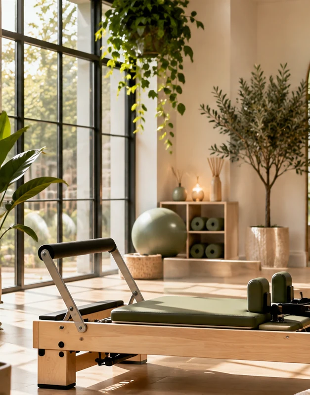
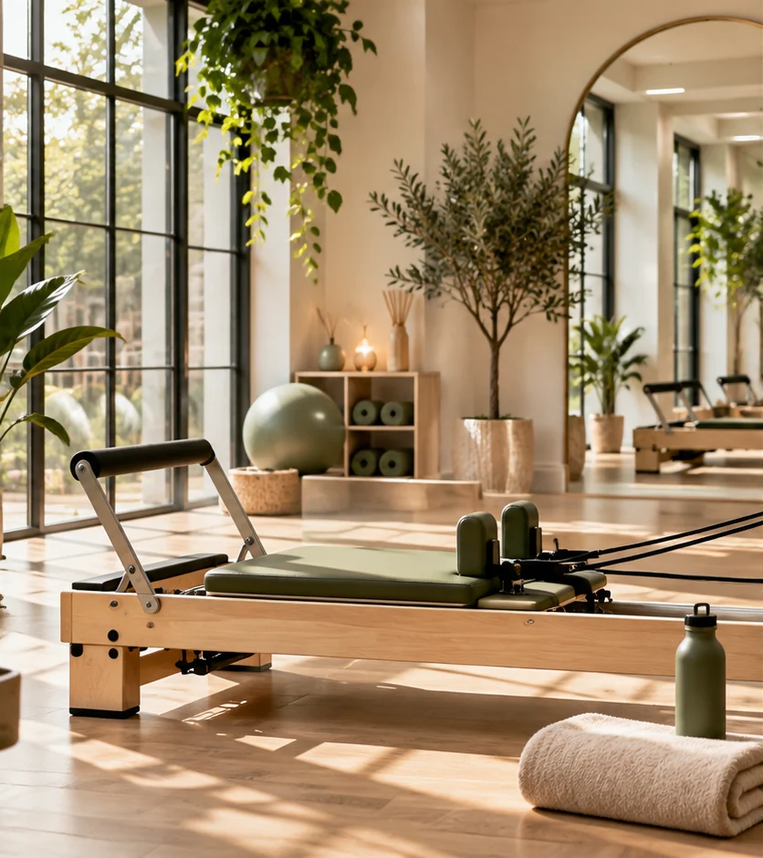

Private Pilates
Personalised one-to-one tuition tailored to your movement goals, ability and experience.
Ask about private sessions ↗Private, semi-private and trio Pilates sessions in a boutique, fully equipped studio in Langdon Hills, Essex.

Session types and equipment are based on the current Exclusive Pilates website. Contact the studio for the current timetable and rates.

Personalised one-to-one tuition tailored to your movement goals, ability and experience.
Ask about private sessions ↗

Very small classes using a rotation of equipment, with foundation sessions for new participants.
Enquire about classes ↗Explore Pilates with a full range of specialist apparatus rather than a single piece of equipment.
The founder and proprietor of Exclusive Pilates teaches Pilates in a boutique Langdon Hills studio. The business website describes her Polestar and STOTT Pilates training and experience.
Sessions are designed around individual instruction, technique and confidence.
Founded 2013Specialist apparatusEssexFor current sessions, prices and availability, please contact Nicole directly. This independent concept does not accept bookings or payments.
Call 07957 235 080 ↗Visit Existing Website